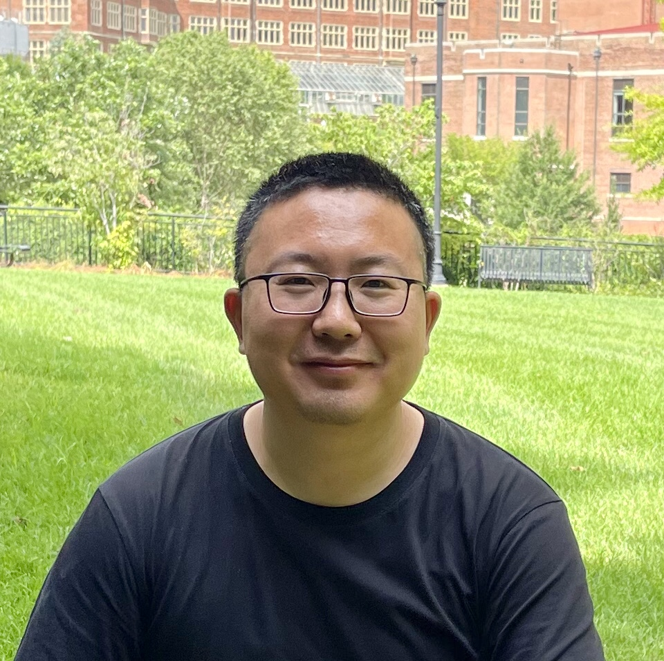

High-Performance Computing
Parallel and distributed computing, task-based runtime systems, and linear algebra algorithms for heterogeneous and extreme-scale platforms.
Computer scientist · Educator
Assistant Professor of Computer Science at Saint Louis University.
Joining Indiana University Bloomington in Spring 2027.
Advancing high-performance computing, artificial intelligence, and quantum computing for scientific discovery at scale.

About
My work sits at the intersection of systems, algorithms, and scientific applications—turning emerging hardware into practical capability for researchers.
I will join Indiana University Bloomington in Spring 2027. I am currently an Assistant Professor in the Department of Computer Science at Saint Louis University. Before joining SLU, I was a Postdoctoral Fellow at the University of Tennessee and a Member of Technical Staff at Cerebras Systems.
I earned my Ph.D. in Computer Science from the University of Tennessee, Knoxville, advised by Dr. Jack Dongarra (Turing Award 2021) and George Bosilca. I hold an M.E. from Ocean University of China and a B.S. from Hunan University.
Research
I develop methods that help complex scientific workloads use modern computing platforms more efficiently, accurately, and productively.
Parallel and distributed computing, task-based runtime systems, and linear algebra algorithms for heterogeneous and extreme-scale platforms.
Large-scale machine learning and efficient computing methods that connect advanced architectures with data-intensive scientific applications.
Quantum simulation and the exploration of new computational approaches for challenging problems in science and engineering.
Software
My software contributions span runtime systems, numerical libraries, and scientific applications.
A task-based runtime for scheduling scientific workloads on distributed, heterogeneous systems.
Dense linear algebra for distributed systems, built on the PaRSEC runtime.
Hierarchical matrix computations that exploit data sparsity in scientific problems.
High-performance geostatistical modeling and prediction on modern computing platforms.
Recognition
Recipient of the 2024 ACM Gordon Bell Prize for Climate Modelling. Finalist for the ACM Gordon Bell Prize in 2022 and 2024.
Work with me
I welcome motivated undergraduate, master’s, and Ph.D. students interested in high-performance computing, AI, quantum computing, and scientific applications.